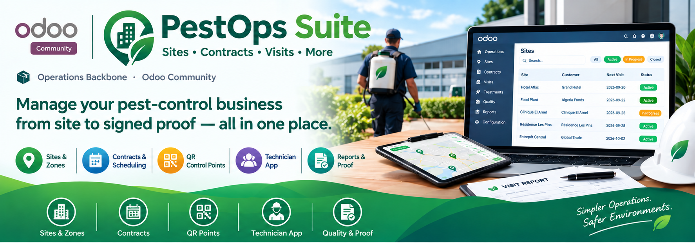
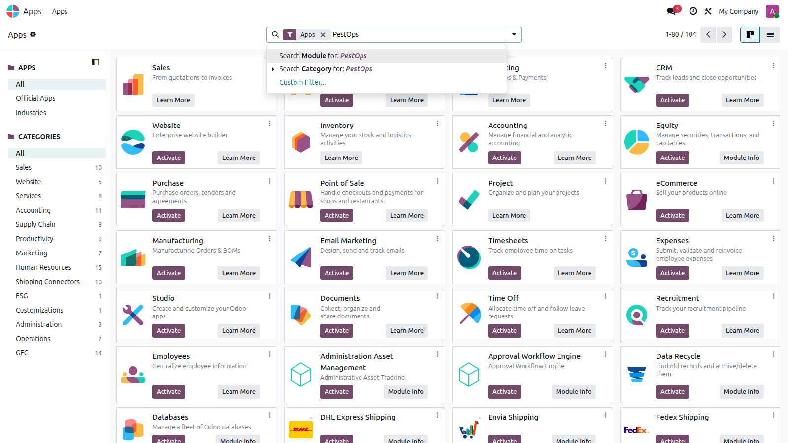

📦 13 Modules · One Install · Odoo Community
🏢 Operations 💰 Billing 📊 Analytics ✅ Quality 🔒 Signed Proof


Thirteen PestOps apps installed from the Apps menu.
Whether you run hotel contracts, food-plant compliance rounds or residential routes, the suite covers the full lifecycle with a single consistent workflow.
🏨 Hotels 🍽️ Restaurants 🏭 Food Industry 🏥 Healthcare 🏬 Retail 📦 Warehouses
Customer → Site → Contract → Treatment Plan → Visit → Inspection → Treatment → Quality → Signed Proof → Portal → Billing → Analytics. Every step feeds the next: visits generate from contracts, inspections gate visit closure, consumption traces feed stock, billing items feed invoices, and everything feeds six live KPI views.
Each suite member below links to its full section further down this page. Every module is also sold separately on the Odoo Apps Store.
Customer sites with zones and QR-coded control points; contracts with per-site frequencies that auto-generate treatment plans and recurring visits; full visit lifecycle with inspections, treatments, stock consumption, re-services and anomalies; touch-friendly technician app with GPS, photos and signatures; service-report and treatment-certificate PDFs.
A PestOps tab on quotations (dates, frequency, technician, billing, sites) plus a guided wizard that builds the draft contract; confirming the sales order auto-activates it and starts planning.
Technician-colored calendar with day/week/month views and quick filters, plus automatic overlap detection: counters, badges, conflict lists and hard guards that block double-booked scheduling.
Billing items from contract periods, service visits and manual extras with auto-computed amounts; one-click generation of native grouped customer invoices; billed-ratio KPIs per contract.
Immutable consumption traces binding product, lot, move, treatment, visit, site and technician; lot/expiry pre-validation; live OK/low/out thresholds with automatic alert activities.
Customers submit re-service, visit and document requests with priorities; your team triages and generates linked re-services. Service reports and certificates published per customer/site/visit with download tracking.
Per-company windows for visit reminders, renewals, overdue visits and anomalies; optional customer emails; deduplicated event log linking every run to its record.
Registry with serials, warranty and status lifecycle; single-active assignments to technicians; inspections and maintenance with due dates and costs; per-visit usage log feeding proofs and analytics.
Versioned procedures and checklists with typed responses; visit checks with automatic pass/fail; non-conformities with severity workflow; corrective actions backed by photo/document evidence.
Six live SQL KPI views (company, sites, visits, contracts, technicians, finance) with native graphs, pivots and lists — strictly read-only.
Intervention proofs with before/during/after photo evidence, customer acceptance, dual signatures and a SHA-256 seal; proof-required visits cannot close unsigned; printable proof report.
Per-company document profiles (languages, titles, footers, legal notices) with bilingual support and per-customer preferences, resolved automatically on every report.
Per-company production settings with maintenance mode and kill-switch; single-run locks and stale-run auto-release for batch jobs, visible in a run journal.
| Odoo Version | Community |
|---|---|
| License | LGPL-3 |
| Module Type | Meta-module (no business logic) |
| Dependencies | All 13 PestOps modules + base, mail, project, stock, sale, account, portal, calendar |
| External Services | None required (mail server only for customer emails) |
| Demo Data | Included via PestOps Core |
Purchase includes full support, bug fixes and updates for the whole suite.
📧 imazighenapps@gmail.com — fast response 🔄 Free Updates 🎭 Demo Data included